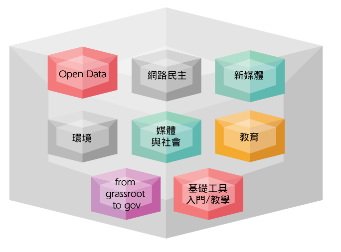

g0v.tw 自從 2012 年 10 月開始以來，已經發起過數十個專案，實際貢獻者也超過數百人。而從一開始著力於開放資料，開放源碼的幾位程式設計師發起的社群，也經由一些社會議題的參與，讓許多其他相關領域的人也加入貢獻 g0v 專案，包括設計師，插畫家，律師，以及記者，社會運動者等等。其中開放政治獻金的專案，便透過許多網路鄉民的群眾力量來進行。318太陽花運動期間更結合網路佈署、新媒體運用，讓開放透明的理念化為實際行動。
而經過這一年多來的努力，雖然 g0v 的專案漸漸被一些民眾看到，但其實我們卻發現，由資訊切入的社會參與，需要更多跨領域專業的協作，如環境相關專家、氣象專業人士、社運組織者、醫療專業等。除此之外，與政府的對話以及數位公民的參與，也是開放資料運動重要的環節。透過更多人的參與，才能讓許多開放資料有更實質的意義。因此在2014年年初，我們開始籌備 g0v.tw summit 2014，希望可以讓更多人透過了解開放開源的 g0v 核心概念，進而運用參與科技改變社會的社群力量。

預計有2~3軌議程+專案成果demo+工作坊+現場攤位，在議程的部分，我們將邀請國內外講者蒞臨分享。詳細議程講題與講者，正在規畫與邀請中，敬請密切注意本站公佈。
以下是議題初步規：
如果您的企業或組織，正期待以正面能量改變社會，歡迎一起來參與這場重要的高峰會，您的一份付出，將有可能讓台灣政府及社會邁向更開放、更前進的未來。
贊助方案
新台幣 100,000
- 企業名稱將出現在相關文件，文宣(如議程手冊、海報、網站...等等)
- 贊助企業將獲得 10 組報名邀請碼 (邀請碼將可於正式開放報名前事先報名，但待正式報名開放後，邀請碼將失效，並不再補發)
聯絡人：Hsin-Chan Chien (hcchien@gmail.com)
主辦單位：g0v零時政府